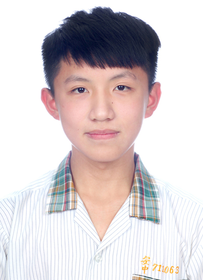

| 興趣 | 讀書、騎車、看星星、打麻將🀄️、跳繩、游泳、唱粵語歌、看美女跳舞 目前最喜歡的歌: Midnight - DRENCHED Prologue | ||||||||||
|---|---|---|---|---|---|---|---|---|---|---|---|
| 教育背景 | 基隆市立深美國小、基隆市立中正國中、基隆市立安樂高中、台中私立靜宜大學二年級 | ||||||||||
| 簡介 | 大家好，我是賴紀丞，來自新北市金山區，很喜歡在中南部騎車，跟北部一直下雨相比，中南部的好天氣令我嚮往，再加上我想要離家裡遠一點，讓我有個獨立的機會，所以我來台中念書。雖然大學生活跟我剛開始想像的不一樣，但現在正在想辦法把人生方向導入正軌。 | ||||||||||
| 相關經歷 |
| ||||||||||
| 未來展望 | 在剩下的三年或四五年，讀書、讀書、還是TMD讀書，戒菸、戒酒，健康又愛讀書大學生；在明年暑假，考重型機車駕照、以及救生員證照。最終目標:財富自由。 | ||||||||||
| 聯絡方式 |
|